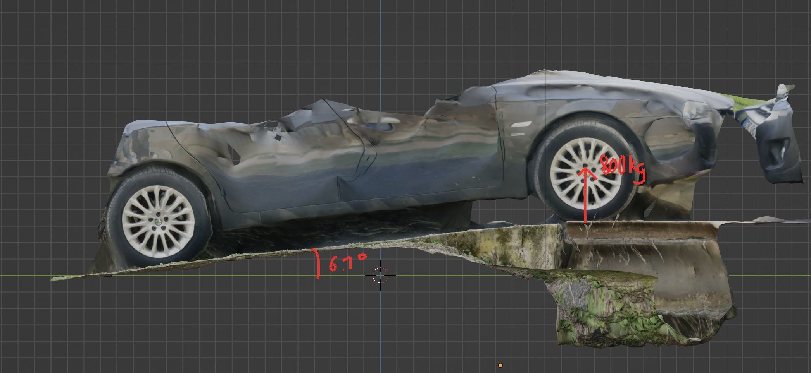

アルファロメオ156の再現について
click here for the english version

このページを書いている時点では、日本語がまだ十分に話せるレベルではありません。このページを日本語で読みたい場合は、機械翻訳をご利用いただけます。翻訳の不正確さについてお詫び申し上げます。
私は今、シミュレーションゲーム『Assetto Corsa（アセットコルサ）』用に自分のクルマをモデリングしているところだ。
Assetto Corsaは改造サポートが充実していることで知られており、それがこのプロジェクトに使用した理由です。
この車は、素晴らしいエンジンとユニークなサスペンションセットアップのおかげで、とても楽しいドライブができます。私は、その再現においてこれを忠実に伝えようとしています。
3Dモデリング


ゼロからクルマの3Dモデルを自作した。3Dモデリングを学びたかったからだ。また、Assetto Corsaのためのカスタムメイドの仕上がりにしたかったのですが、ネット上にはベースとなる良い3Dモデルがありませんでした。
写真スキャンを使ってベースを作成し、その上でBlenderを使ってモデリングしました。
私は物理的なモデリングに興味があったが、この車は本当に美しいので、見た目を正確に再現することが重要だった。結果には満足している。


インテリアのジオメトリのプレビューです。同じプロセスを使用しています。
物理モデリング

フィアットはこのクルマに関する技術情報をあまり共有していないため、このクルマの物理を正確にモデリングするのは難しい。
いくつかのデータについては推測や見積もりをしなければならないが、私はできるだけ測定に基づいてモデリングを行うようにしている。
左側のスキャンは、車の重心の高さを計算するために農場の車軸重量計の上り坂で行われました。
右側のスキャンでは、サスペンションのジオメトリを正確にモデル化するために、私のサスペンションをスキャンしました。
この車は、前部にダブルウィッシュボーンサスペンションのユニークなセットアップを持ち、後部には特別なマルチリンクセットアップがあり、顕著なパッシブリアウィールステアリングを与えています。これをゲーム内で再現したいと考えています。
私はスマートフォンを車に取り付けて走り回り、そのセンサーを使用して縦方向と横方向の加速度で車のピッチ／ロールのデータを収集しました。
車の重心の高さとサスペンションのジオメトリーがわかっているので、このデータを利用して前後のホイールレートとアンチロールバーの剛性をおおよそ推定できると考えています。


結論
私は、これらすべてを示すことで、車、ドライビングダイナミクス、車両物理学、そしてレースゲームへの情熱を感じていただけることを願っています。Gran Turismoが大好きであり、このインターンシップの面接の機会があれば、とても嬉しいです。
- 連絡先
- bastian.cataldi@free.fr
- +33 7 83 79 67 25